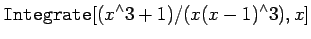

Inhalt Index DeskTop Bronstein

 Computeralgebrasysteme Anwendungen von Computeralgebrasystemen Differential- und Integralrechnung Mathematica
Computeralgebrasysteme Anwendungen von Computeralgebrasystemen Differential- und Integralrechnung Mathematica


Mit der Anweisung versucht Mathematica, das unbestimmte Integral zu bestimmen. Wenn das Integral Mathematica bekannt ist, gibt es dieses ohne die Integrationskonstante wieder. Mathematica nimmt an, daß jeder Ausdruck, der die Integrationsvariable nicht enthält, auch nicht von dieser abhängt. Den bei der Integration (s. Integrationsregeln) auftretenden Problemen kann Mathematica nicht ausweichen. Im allgemeinen findet es unbestimmte Integrale, wenn sich diese durch elementare Funktionen, wie rationale Funktionen, Exponential- und Logarithmusfunktionen sowie den trigonometrischen und deren inversen Funktionen ausdrücken lassen. Wenn Mathematica nicht in der Lage ist, das Integral zu bestimmen, gibt es die Eingabe zurück. Allerdings kennt Mathematica einige spezielle Funktionen, die durch nicht elementar bestimmbare Integrale definiert sind, wie z.B. die elliptischen Funktionen und andere.
Zur Demonstration der Möglichkeiten von Mathematica werden einige Beispiele betrachtet, die im Unterkapitel Unbestimmte Integrale behandelt werden.
(s. Integration rationaler Funktionen)
| Beispiel A |
| = | |||
| = |
| Beispiel B |
| = |  | ||
| = | (20.72) |
(s. Integration trigonometrischer Funktionen)
| Beispiel A |
|
Es wird das Beispiel A mit dem Integral |
| = | |||
| = |  |
| Beispiel B |
|
Es wird das Beispiel B mit dem Integral |
| = | |||
| = |
Im Falle nichtelementarer Integrale versucht Mathematica diese durch ihm bekannte spezielle Funktionen (deren es eine Vielzahl gibt) auszudrücken. Ist das nicht möglich, so wird das Integral unverändert zurückgegeben.
| Beispiel |
|
|